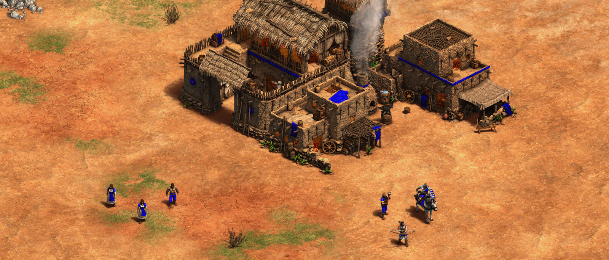

Que es AGE OF EMPIRES?

Debes construir un imperio próspero a medida que te expandes a través de los tiempos, derrotando a cualquier imperio rival. En Age of Empires II: Definitive Edition, tu objetivo es expandir y desarrollar tu imperio haciendo crecer tu economía, investigando tecnologías y entrenando unidades militares.
Al iniciar una partida, cada jugador empieza con 3 (tres) aldeanos y un explorador, el mapa estrategia con una niebla donde se tendra que explorar para descubir los demas jugadores exparcidos por el mapa. El centro civil es tu primer edificio, donde desarrollaras Tecnologias las cuales cuestan oro y comida, y tambien donde podras avanzar entre las 4 epocas donde te dara ventaja con nuevos edificios y unidades.
Si tus aldeanos mueren sera tu fin ya que estos son el pilar de tu economia y fuente inicial de recursos, cuidalos sabiamente.
No descuides el avanzar de epoca, ya que tus rivales en una epoca y con puntos mas altos sera muy complicado ganar la partidaLos puntos definen que tan avanzado vas en la partida con respecto a tus enemigos, es definido por tu nivel militar, tecnologico, social, economico y territorial.